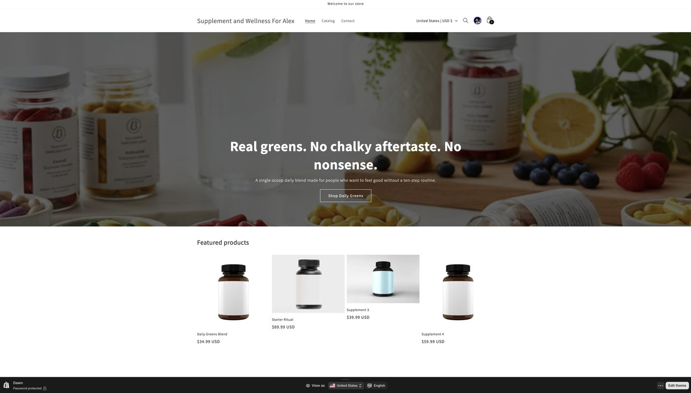
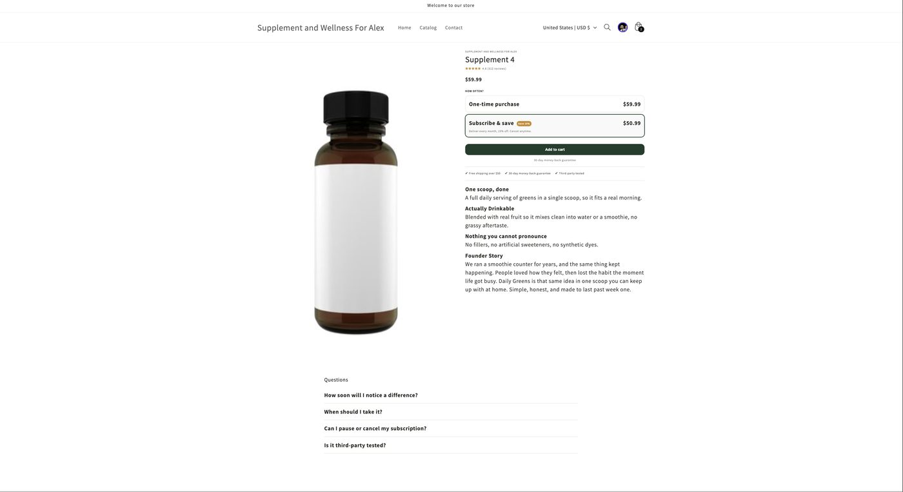
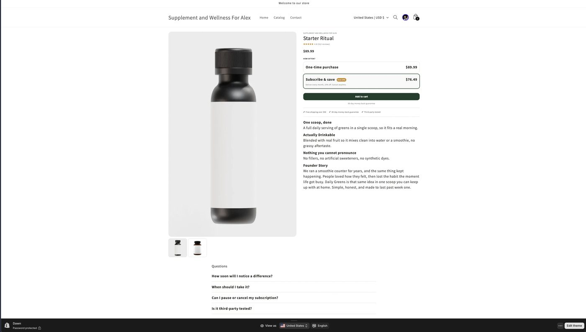

Proposal, in-house DTC build
A working demo, a conversion plan, and the background to build it in-house. Put together specifically for what you described: a high-converting Shopify operation, owned end to end.
Purpose
You posted that you are taking things in house and building the team from the ground up, and you listed exactly what the role needs to own. Rather than send a message claiming I can do it, I built a working Shopify store that demonstrates it. This document walks through the build, the thinking behind it, and how it maps to your business.
The homework
Monarca Ulje is a natural hair and scalp care brand your partner Belisa built from a garage into a warehouse and a Bronx location, reaching the US, Canada, and the Dominican Republic. The monarch butterfly stands for transformation, and the brand leads with a clear point of view: as Monarca puts it, scalp first, everything else follows. On top of that, you and your partners already operate in nutrition and smoothies in the real world, which is exactly why a supplement store is the right thing to prototype.
Sources: Monarca Ulje site and About page, public brand and founder coverage, and your own notes on the nutrition business. The demo uses placeholder brand assets, not Monarca's, so nothing is misrepresented.
Concept of design
The design principle is simple. Trust and story are what sell wellness, so the product page should feel like the brand and remove every reason to hesitate. Practically, that means the buy box, price, and social proof sit above the fold, the subscription is framed as the normal choice, and the page stays fast and clean on mobile, where most of the buying happens.
A grounded palette pulled from the wellness and butterfly world: deep green for calm and nature, amber for the monarch, warm cream for a premium, organic feel. Set once at the theme level so the whole store stays coherent.
The entire path
You said you need someone who understands the whole path. Here it is, mapped to your list, from the visitor landing to the loop that keeps improving it.
The live demo
A custom product page section on the Dawn theme, editable in the theme editor, with subscribe and save and a bundle wired in through standard Shopify apps. Here is what it produced.

Homepage. Brand palette set at the theme level, so the store reads as one coherent brand rather than a stock template.

Product page. Buy box, price, and rating above the fold. Subscribe and save is the default option, calculating the discount live. Benefits, trust row, founder story, and FAQ handle the objections that stop wellness buyers.

The Starter Ritual bundle. The AOV lever, raising order value without discounting the hero product into the ground.
Honest note: this is a working demo, so the review counts are placeholders and the store runs behind a password. The mechanics, subscriptions, bundles, live pricing, mobile sticky cart, are real and functioning.
The experiment
Testing is a discipline, not a guess. Here is the documented A/B test built into the demo, written the way a DTC team would actually run it.
Honest note: a demo store has little traffic, so this shows correct methodology rather than proven numbers. The value is that the experiment is designed right and I can walk anyone through the reasoning. I would never dress up a thin sample as a real result.
What I can do for you
Background
I am a full-stack developer and UX designer based in Queens. What makes me a fit here is not just code, it is that I have lived the DTC and retail side, and I have shipped real Shopify work.
Store manager at Brooklinen, where I also built the internal operations tooling used across all 8 stores. I know how a direct-to-consumer brand actually runs, not just in theory.
Helped build Framebridge's Shopify system from the ground up, so I know the platform and the DTC customer path, not only the front-end.
Google UX Design and MIT UX/UI certifications on top of full-stack development. Conversion work sits exactly at that intersection.
A background that runs from architecture to software, with a habit of taking things from idea to something real and adopted.
Selected work
An AI-powered MLB analytics platform. Full product: web app plus a React Native iOS app in development, Stripe billing, and Clerk authentication. End-to-end product ownership.
mlbedgepro.devA wholesale delivery startup serving the Bronx. I lead the tech, from the site and DNS to a points-based referral and giveaway strategy that ties product to growth.
View case studyInternal retail tooling for a DTC brand. The adopted win: consolidating five to six disconnected spreadsheets into two automated systems across 8 stores, saving the team 5-plus hours a week, with leadership buy-in.
View case studyThe demo store is live and ready to walk through whenever you are. If the fit feels right, the next step is a call.
See more of my workAndres Marte, @visuxlize, github.com/visuxlize, visuxlize.github.io/portfolio